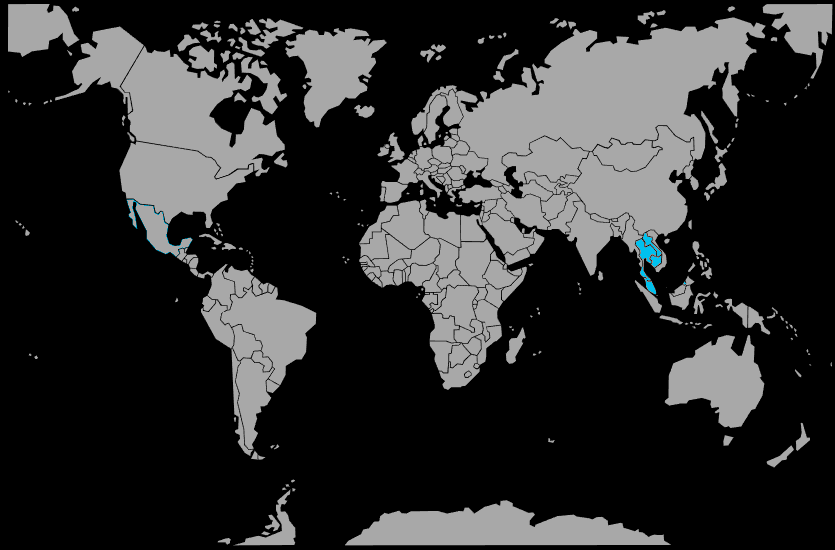

Systématique
- Ordre : Cypriniformes
- Famille : Cyprinidae
- Genre : Crossocheilus
- Espèce : Crossocheilus siamensis
Crossocheilus siamensis, souvent vendu sous le nom de « mangeur d’algues siamois », est un cyprinidé actif réputé pour son efficacité contre de nombreuses algues, y compris certaines algues pinceaux.
C’est un poisson élancé pouvant atteindre 12–15 cm, qui passe une grande partie de son temps à brouter les surfaces du décor, du substrat et des feuilles.
En milieu naturel, l’espèce vit en groupes dans des rivières bien oxygénées au courant soutenu ; en aquarium, il est préférable de la maintenir en petit groupe dans un bac spacieux.
Globalement pacifique, Crossocheilus siamensis peut toutefois se montrer remuant et territorial avec ses congénères à l’âge adulte si l’espace et les cachettes sont insuffisants.
Mode : ovipare ; la ponte se fait en pleine eau ou sur le substrat, sans soin parental, mais la reproduction en aquarium d’amateur reste très rare.
La plupart des individus disponibles dans le commerce proviennent encore d’élevages spécialisés ou de captures, plutôt que de reproductions spontanées en bac communautaire.
Dimorphisme sexuel : très peu marqué ; les femelles adultes ont souvent un abdomen plus rebondi, tandis que les mâles restent un peu plus fuselés.
Espérance de vie : environ 8 à 10 ans en aquarium, avec une eau propre, bien oxygénée et une alimentation adaptée.
L’espèce est associée aux cours d’eau clairs et rapides d’Asie du Sud‑Est, avec substrat rocheux ou sableux et de nombreuses surfaces ensoleillées couvertes de biofilm et d’algues.
Répartition
Origine naturelle :
- Asie du Sud‑Est, notamment Thaïlande, Laos, Cambodge et péninsule Malaise.
- Rivières et affluents à courant modéré à rapide, avec fonds de roches, graviers ou sable et zones riches en algues et biofilm.
Ces poissons fréquentent des eaux bien oxygénées, souvent claires, où la lumière permet le développement d’un tapis d’algues sur les pierres et les racines, servant de base à leur alimentation.
Paramètres de maintenance
Température : 23 à 27 °C.
pH : 6,5 à 7,5, eau légèrement acide à neutre.
GH : 5 à 15 °dGH, eau douce à moyennement dure.
Courant : modéré, avec une bonne oxygénation et une filtration efficace pour reproduire un environnement de rivière.
Volume conseillé : à partir de 200 L pour un petit groupe, avec une bonne longueur de façade et un décor offrant cachettes et zones de repos.
Régime alimentaire
Régime : principalement herbivore et brouteur de biofilm ; consomme de nombreuses algues, mais doit être complémenté avec des pastilles végétales, aliments à base de spiruline et légumes pochés.
Une part raisonnable de nourritures protéinées (petites proies vivantes ou congelées) peut être distribuée, mais l’alimentation doit rester majoritairement végétale pour éviter l’embonpoint et maintenir son rôle de mangeur d’algues.